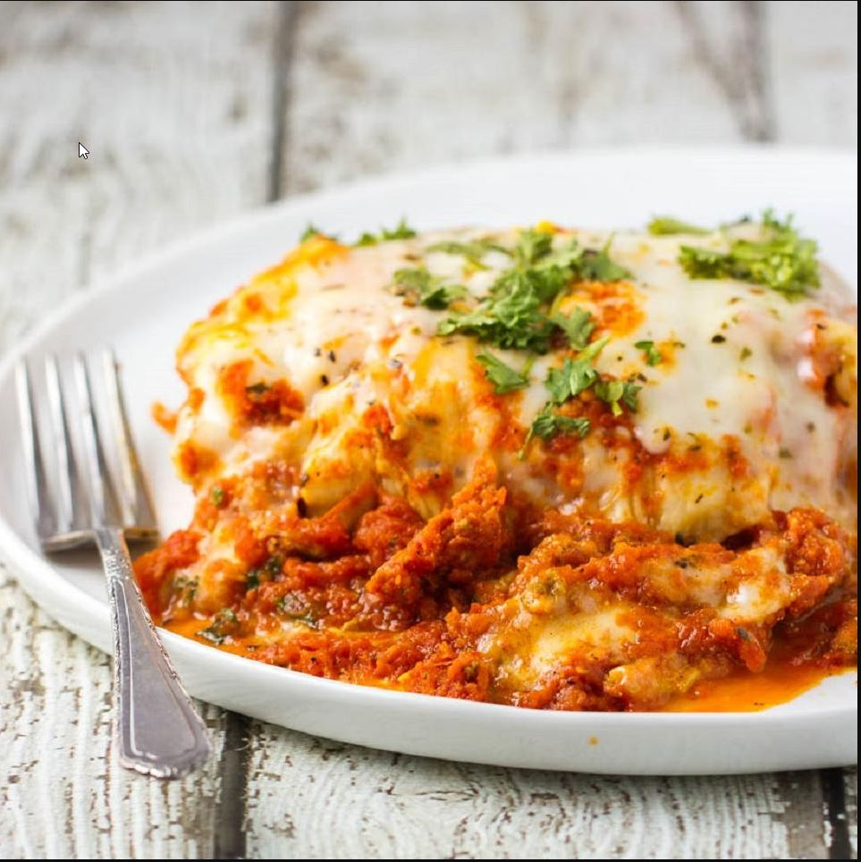

Lasagna

World’s Best Lasagna. It takes a little work, but it is worth it.
1 poundsweet Italian sausage¾ poundlean ground beef½ cupminced onion2cloves garlic, crushed1 (28 oz)can crushed tomatoes2 (6 oz)cans tomato paste2 (6½ oz)cans canned tomato sauce½ cupwater1½ tbspwhite sugar1½ tspdried basil leaves½ tspfennel seeds1 tspItalian seasoning1½ tspsalt, divided, or to taste¼ tspground black pepper4 tbspchopped fresh parsley12lasagna noodles16 ouncesricotta cheese1egg¾ poundmozzarella cheese, sliced¾ cupgrated Parmesan cheese
In a Dutch oven, cook sausage, ground beef, onion, and garlic over medium heat until well browned. Stir in crushed tomatoes, tomato paste, tomato sauce, and water. Season with sugar, basil, fennel seeds, Italian seasoning, 1 teaspoon salt, pepper, and 2 tablespoons parsley. Simmer, covered, for about 1 1/2 hours, stirring occasionally.
Bring a large pot of lightly salted water to a boil. Cook lasagna noodles in boiling water for 8 to 10 minutes. Drain noodles, and rinse with cold water. In a mixing bowl, combine ricotta cheese with egg, remaining parsley, and 1/2 teaspoon salt.
Preheat oven to 375 degrees F (190 degrees C).
To assemble, spread 1 1/2 cups of meat sauce in the bottom of a 9x13-inch baking dish. Arrange 6 noodles lengthwise over meat sauce. Spread with one half of the ricotta cheese mixture. Top with a third of mozzarella cheese slices. Spoon 1 1/2 cups meat sauce over mozzarella, and sprinkle with 1/4 cup Parmesan cheese. Repeat layers, and top with remaining mozzarella and Parmesan cheese. Cover with foil: to prevent sticking, either spray foil with cooking spray, or make sure the foil does not touch the cheese.
Bake in preheated oven for 25 minutes. Remove foil, and bake an additional 25 minutes. Cool for 15 minutes before serving.